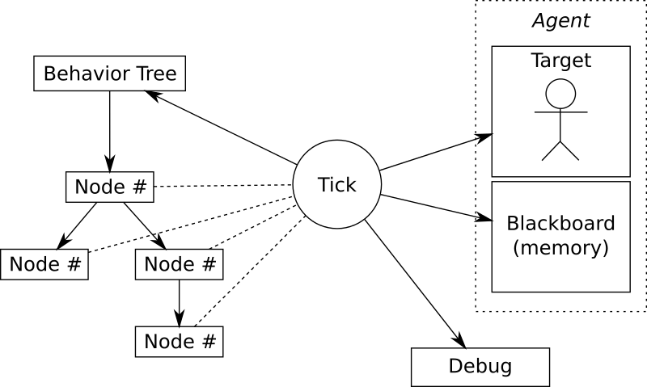

行为树，英文是Behavior Tree，简称BT，是由行为节点组成的树状结构。行为树的每个节点都会返回一个状态，成功，失败，运行，父节点根据子节点的返回值做出相应的决策。在游戏开发中，行为树主要用来实现怪物AI的行为决策，根据条件以及环境来决定怪物执行什么样的行为，如攻击，逃跑，巡逻，休息等。
为什么使用行为树
怪物行为的控制一般来说有三种方法，
- 最简单的if-else嵌套。这种方法最直观，但是维护起来比较困难。
- 第二种方法是有限状态机。根据怪物当前所处的状态和当前的环境，决定状态如何迁移。当状态较多时，状态之间的迁移会比较复杂。而且增加状态时需要改动的地方很多。
- 行为树相对于前两种方式的优势在于，他实现了控制逻辑与行为逻辑的分离，控制逻辑就是行为树，行为逻辑则是各个行为节点。
对于游戏开发来说，我们可以让策划通过行为树编辑器来编辑行为树，程序只需要实现具体的行为节点，就可以实现行为决策。
组成部分
行为树的结构如图。

行为树有四种类型的节点，分别是
- 控制节点，最主要的是选择节点（Selector）和顺序节点（Sequence）。控制节点都不是叶子节点，它根据子节点的返回值返回成功，失败，运行这三种状态。
- 行为节点，具体的行为逻辑，如逃跑，巡逻。行为节点一般是叶子节点，返回成功，失败，运行这三种状态。
- 条件节点，叶子节点，返回成功，失败这两种状态。
- 装饰节点，非叶子节点，实现一些附加的逻辑。如取反。
每个执行AI的实体拥有一个Tick实例，这个实例保存了这个执行实体的状态参数，以及一个可读写的黑板。
黑板（blackboard）是行为树实现中用来存储变量，感知环境的一个概念，节点可以访问黑板来存取变量。
执行实体的数据可以直接写入黑板，而行为树节点的执行数据需要加上节点id写入黑板。
行为树一般以一定的频率周期性的执行tick函数，每次tick都从根节点开始执行。有一些行为树会直接从返回运行的节点开始执行，这样的话如果有低优先级的节点一直返回运行状态，
遇到高优先级的节点时则无法打断低优先级的节点。比如怪物在巡逻的时候返回运行，这时候如果有玩家攻击它，合理的反应是进行反击或者逃跑，但是如果每次tick都从巡逻节点开始执行，
则根本不会处理到反击或逃跑的逻辑。
具体实现
Erlang版行为树的具体实现参考了Behavior3的版本。每个节点的有5个回调函数。
- enter_cb 每次tick都会执行
- open_cb 只有未打开的节点会执行，如果节点有running状态，意味着节点处于running状态会跨越多个tick，然而只有打开节点的那个tick会执行该函数。
主要用来执行节点的初始化。比如移动节点设置目标点。等待节点用来设置开始时间等。 - tick_cb 节点的主逻辑。每个tick都会执行。
- close_cb 跟open_cb对应，只有结束节点的时候执行。意味着跨越多个tick的runing节点这个函数只会执行一次。一般用来关闭节点。
- exit_cb 每个tick都会执行。
1 | execute(#node{id = Id} = Node, #tick{blackboard = Blackboard} = Tick) -> |
选择节点priority，顺序执行子节点，如果子节点返回成功则返回成功，跳过后续子节点。
如果失败则继续执行后面的子节点，直到有节点返回成功或者运行为止。如果所有节点都失败，则返回失败。
如果子节点返回运行则该节点也返回运行。
如果需要记住上次运行的节点，下次直接从该运行子节点开始执行，可以使用mem_priority类型的节点。
如果子节点包含两个以上可能返回运行的子节点，则需要考虑是否使用mem_priority版本。
1 | priority([], Tick) -> |
顺序节点，顺序执行子节点，如果子节点返回失败则返回失败，跳过后续子节点。
如果子节点返回成功，则继续执行后续子节点，直到有节点返回失败或者运行为止。如果所有子节点都成功，则返回成功，
如果子节点返回运行，则该节点也返回运行。
类似mem_priority, 顺序节点也有一个mem_sequence节点，如果有两个以上子节点可能返回运行状态，则需要考虑是否使用mem_sequence.
比如，怪物执行巡逻，顺序节点有两个子节点，分别执行移动到A点，和移动到B点，那么必须使用mem_sequence，
每次tick从上次运行的地方继续运行。否则怪物只会在A点附近反复移动，无法移动到B点。
1 | sequence([], Tick) -> |
要注意的一个问题是，当出现高优先级的行为B1打断低优先级行为B2时，因为每次从根节点开始tick，B2的无法从内部正常的关闭。这时候需要在主逻辑上额外处理一下上上次打开的节点，
即调用一下这些节点的close函数。Behavior3的实现中通过比较本次的开放节点列表和上次的开放节点列表，找出上次开放，本次没有开放的节点来关闭，这样可能存在一个问题。
也就是当上次开放的节点在本次tick正常结束的情况下，仍然会被重新关闭一次，即一个节点关闭了两次。 Behavior3的实现就存在这样的bug。
解决的办法是，在判断节点是否需要关闭的时候，检测一下节点是否开放，如果是开放，则关闭，否则不予处理。
Erlang版本的实现中通过遍历行为树节点来找到未正常关闭的节点，考虑到行为树通常不会很大，性能上也可以接受。
遍历行为树关闭未能正常关闭的节点的实现：
1 | close_nodes(_, _, [], Tick) -> Tick; |